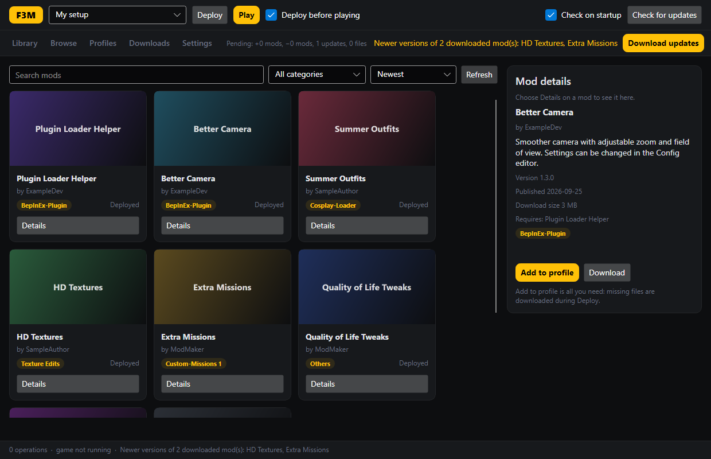
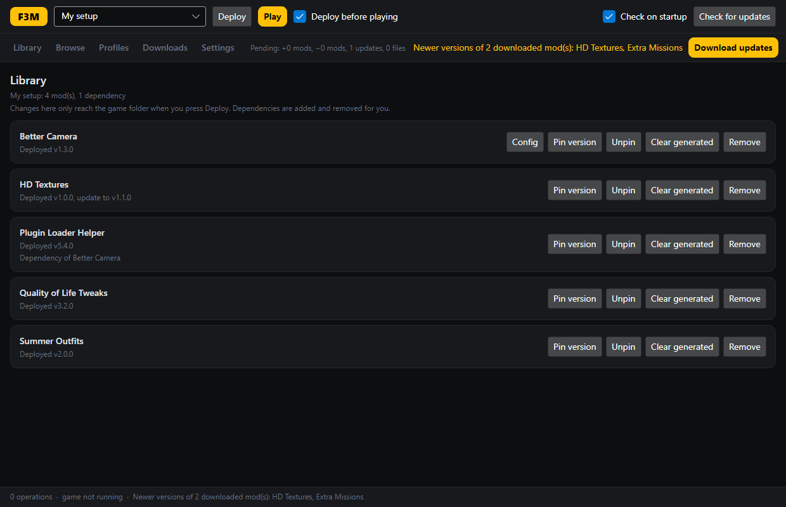
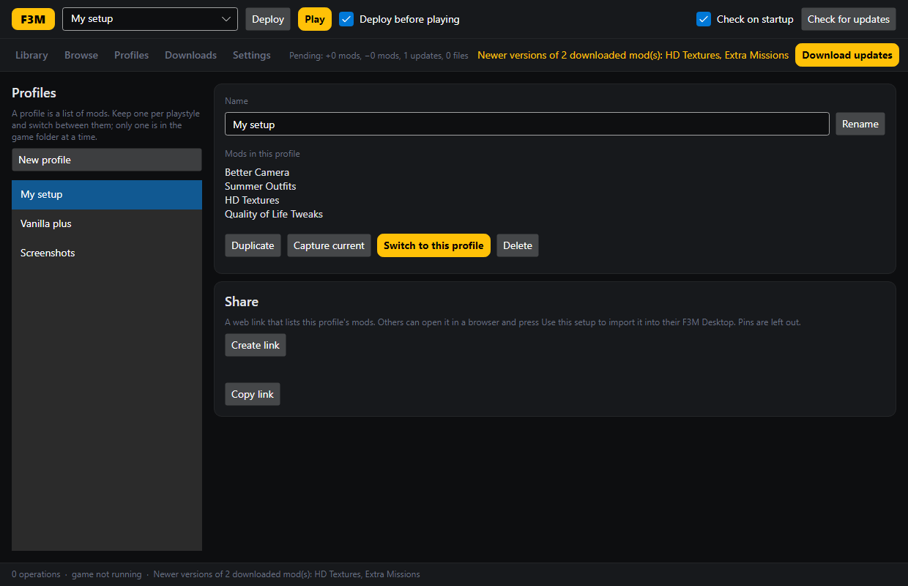
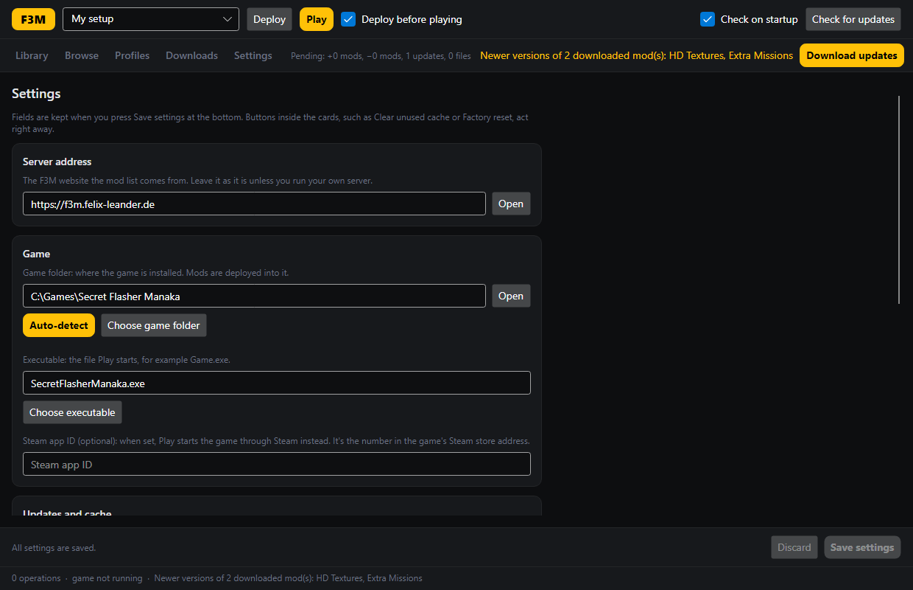

Find mods
- Search all published mods, filter by category, and see what each one needs.
- Add to profile is all you need. Downloads happen by themselves.
- On the website, buttons can open a mod or a whole mod list straight in the app.
F3M is a free mod manager. Pick the mods you like, press one button, and play. No copying files by hand, and removing a mod is just as easy.
Free and open source. All releases

Three steps, and the app remembers everything for next time.
Download it above and start it. It finds your game by itself.
Browse the mods in the app or on the website and press Add to profile. Mods a mod needs are added for you.
F3M puts the mods into the game and starts it. Changed your mind? Remove a mod, and it's gone the next time you press Play.
The screenshots show F3M Desktop with example mods.



Everything you need for the first start. It takes about two minutes.
F3M.Desktop-win-Setup.exe) and run it. No admin rights are needed.~/Applications.chmod +x F3M.Desktop-*.AppImage.libfuse2 (most distributions have it).The details, for when you want to know exactly what happens.
Yes. Before F3M changes a file in the game folder, it writes down what it will do and keeps a copy of anything it replaces. If a deploy fails, is cancelled, or the computer crashes in the middle, the game folder is put back exactly as it was, at the latest on the next start.
F3M also asks before it replaces a file it didn't put there, and it keeps your own changes to a mod's settings files.
Your profile is the list of mods you want. Deploy makes the game folder match that list: it installs new and updated mods and removes the ones you took out. Until you deploy, nothing in the game changes. The top bar always shows what a deploy would change.
A profile is a named list of mods, such as "My setup" or "Screenshots". Only one profile is in the game at a time; switching shows a summary first. A pin keeps one mod at its current version in that profile, even when a newer one comes out. Pins stay on your computer and are not part of shared links.
Mods can declare files they create while the game runs, such as caches and logs. Clear generated in the Library lists them and removes them after you confirm. When you remove a mod, F3M offers to remove its generated files too. Save data a mod marks as yours is never touched.
%LOCALAPPDATA%\F3M. Linux: ~/.local/share/f3m. Settings shows the folder as a link.Not for the desktop app: browsing, downloading and installing mods work without one. An account on the website is for people who publish mods. You can sign in with your F95zone profile.
In Settings, press Copy diagnostics and paste the result into a GitHub issue, or ask in the SFM modding Discord.
F3M has two parts. The website (ASP.NET Core and Blazor) hosts the mods and lets authors upload versions, dependencies and install paths. F3M Desktop (.NET and Avalonia) installs them on your computer.
The website publishes a mod catalog that is signed with an ECDSA key. The app checks every catalog document against that key and every downloaded file against its SHA-256 hash before anything reaches the game folder. Install paths are checked so a mod can never write outside the game folder.
Mods are kept in a local cache and copied into the game folder on deploy. Every change is journalled with a backup, so it can be rolled back. Links from the website use the f3m:// scheme, and the app asks before acting on one.
Everything is open source under the license in the repository. You can run your own server with Docker; see the README.